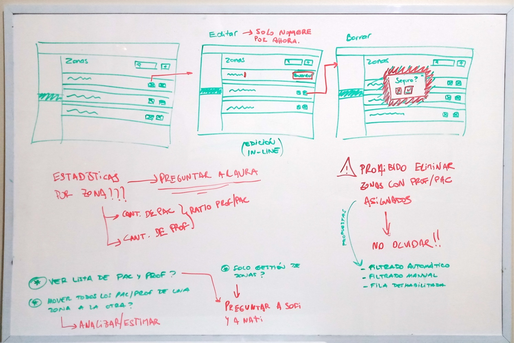
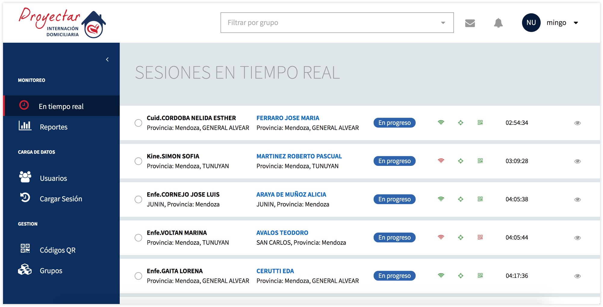
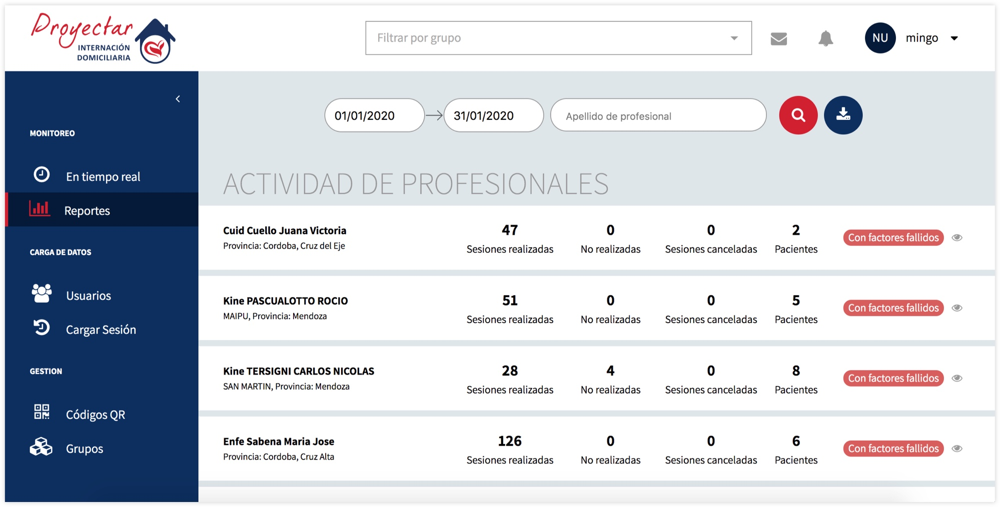
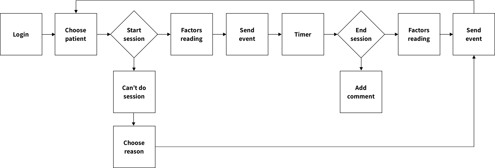
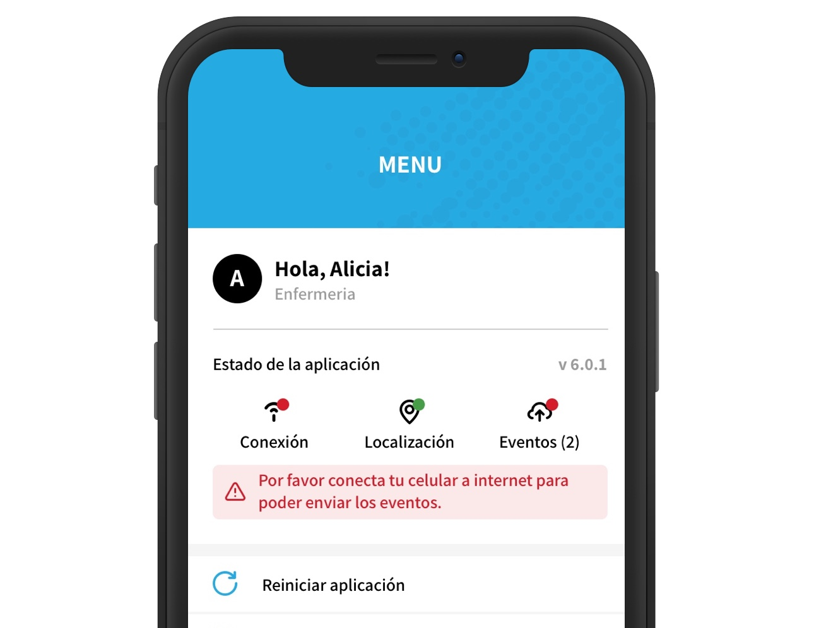

Rav3n
One of the most critical aspects of home care services providers in monitoring and controlling the activity of health professionals who are responsible for their patients.

My position
Product Designer
Co-founder
Product Designer
Co-founder
Team
Two Developers
GP Leadership Team
Monitoring Team
Support Team
Two Developers
GP Leadership Team
Monitoring Team
Support Team
My role
Ideation
Wireframing
Visual Design
Interaction Design
Ideation
Wireframing
Visual Design
Interaction Design
Year
2017/Present
2017/Present
The context
In August 2017 we were contacted by the CEO of Grupo Proyectar, a home care services business from Argentina, with a very interesting problem at hand. He was in trouble, he had a large group of patients scattered throughout the entire Cordoba province and he had no means for monitoring the activity of their employees remotely and in real-time.
Moreover, his business was expanding, he had successfully signed a bunch of contracts in another province, Mendoza, duplicating the number of patients under his charge. He was desperate, on the verge, but luckily for him, he found us.
The problem
Grupo Proyectar needed a cost-efficient and realistic way to answer the following questions:
- How could they tell if a doctor was actually visiting and checking regularly the patients they have assigned?
- How could they know, in a timely manner, when something important had happened to a patient?
- How could they do all of that remotely, in real-time, with all their patients scattered throughout two provinces?
My role
I am the only designer in the entire project organization. This means that I am in charge of most of the design decisions throughout the project, mainly on the product side but also regarding branding, onboarding, training, etc. This put me in a particularly challenging position, especially at the very beginning of the project, where I had to deal with multiple stakeholders having a very wide set of priorities.
Exclusively from a product design perspective, I was responsible for wireframing, prototyping, defining the interactions and the UI visual design, and more importantly, going from the raw problem definition that we were given to an actual possible solution of that problem.
Accepting the challenge
The first thing we did after accepting the challenge was to collect as much information as we could, mostly coming from Grupo Proyectar admin people and leadership team, our main stakeholders. We used to meet regularly via Skype, interviewing different people, in order to fully understand the problem and all its different angles, as well as having a more comprehensive view of their business, clients, goals, expectations, etc. Throughout this process, we heavily relied on practices like how-might-we questions, wireframing and prototyping with our stakeholders.

Whiteboard thinking process example
After almost two months of intense work with the entire team, after lots of discussions, planning, and design sessions, we came up with a solution to the problem at hand.
The final idea was to keep track of the start and the end of all the sessions that are carried out with the patients. In order to accomplish this, their employees (health professionals) should install an app in their phones - provided by us - and use it each time they visit their patients, registering the moment and location in which the session commences and finishes. All these records are then sent to a centralized service that processes them, crafting different types of reports. A specialized team - provided by Grupo Proyectar - can use these reports to monitor and control the activity of the entire home care service.

Real time report

Activity report
Understanding the user
We have two different kinds of users.
- Health professionals (general practitioners, physiotherapists, speech therapists, nurses, and caregivers) that provide home care assistance and have to register their activity through the mobile app.
- Specialized monitoring team that uses a web UI to analyze and control the activity of the health professionals.
Designing the mobile app for health professionals was a particularly hard challenge for us. Firstly, they don't like to be monitored and controlled by their employer. Secondly, they mostly belong to a group of people that are far away from being considered as tech savvies. They were very reluctant to change their routine just for the sake of being monitored. We knew that if we wanted to succeed we had to be smart. We then studied their mental models and designed the mobile app based on those, prioritizing its simplicity every single time.

Mobile workflow
In order to minimize the impact that the app could have on the health professionals' routines, I was heavily involved in the definition of the onboarding process. We needed a way to introduce the app, teach them how to use it and answer all their questions once they have started using it. Thus, we:
- Distributed electronically handy brochures
- Created training videos
- Scheduled several training sessions in different locations
After that, we established communication channels between the users and a support team, also provided by Grupo Proyectar.
Understanding the environment
Finding a proper way to deal with the environment where health professionals use the app was a major difficulty as well. More often than not, they need to visit patients that live in very remote locations, in places in the middle of nowhere where good internet connectivity is simply a luxury.
Moreover, we needed to handle this situation without compromising the app's simplicity and also impacting the system's real-time reporting capabilities as little as possible.
The solution we came up with was an "events queue" fully transparent to the users, where an event could be the beginning of a session, the end of a session, or the impossibility of carrying out a session. Each time a health professional registers any of those events in the app it is always sent to a local queue that is constantly synchronizing data with our servers.

Events queue in offline mode
Constantly improving
This is indeed a big project. We have been working on it for years, facing many interesting challenges along the way. This brief summary describes just a few of these.
It is important to highlight that Rav3n is still an ongoing work in progress. We are growing every month, in fact, we recently reached the mark of ~1000 mobile users (health professionals using our app), which brings several new opportunities to improve and extend this product.
Takeaways
Working on this project has been a great experience overall, it taught me a lot of very useful stuff like how to deal directly with stakeholders that don't come from the software industry, the experience of taking a raw problem and coming up with an entire product that solves it, etc.
Nonetheless, I believe that the main lesson I could take from this experience, so far, is how to work with very limited resources and making smart decisions in order to satisfy the user's needs under an appropriate timeframe.